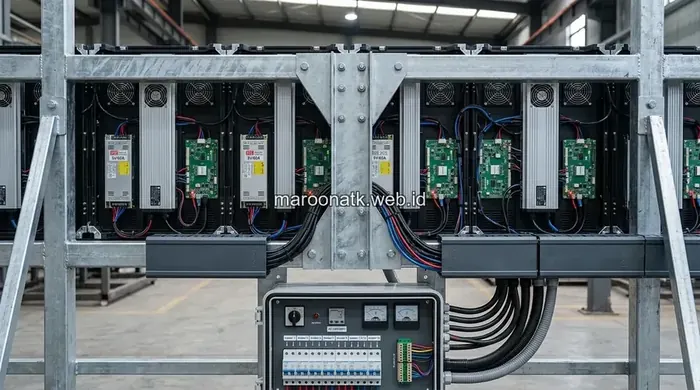

Memilih distributor videotron Jakarta yang tepat tidak hanya sebatas membeli unit modul LED murah, tetapi memastikan proses instalasi fisik berjalan aman dan terstandarisasi melalui perhitungan konstruksi bracket oleh insinyur sipil bersertifikat. MAROON ATK menyediakan layanan pengadaan dan pemasangan videotron LED end-to-end, mulai dari survei kelayakan struktur hingga serah terima pekerjaan berdokumen BAST resmi.
Apa Itu Layanan Pengadaan dan Pemasangan Videotron LED?
Layanan pengadaan dan pemasangan videotron LED adalah rangkaian solusi menyeluruh mulai dari konsultasi kebutuhan visual, penentuan spesifikasi pixel pitch, perhitungan mekanik bracket, perakitan modul kabinet, hingga konfigurasi video processor di lokasi klien.
Layanan profesional ini sangat vital bagi pengelola gedung perkantoran, pusat perbelanjaan, ballroom hotel, instansi BUMN, maupun fasilitas publik di DKI Jakarta yang membutuhkan display digital berskala besar dengan jaminan keamanan instalasi tanpa risiko kegagalan struktur.

Harga Videotron LED Indoor Jakarta: Panduan Estimasi Biaya per Meter
Pelajari kisaran harga unit videotron indoor per meter persegi, komponen controller Novastar, dan biaya instalasi.
Mengapa Konstruksi Bracket Videotron Perlu Diperhitungkan oleh Insinyur Sipil?
Konstruksi bracket videotron wajib diperhitungkan secara cermat oleh insinyur sipil karena satu bentang layar videotron memiliki bobot ratusan kilogram hingga puluhan ton. Beban statis kabinet die-cast aluminum serta dinamika beban angin (wind load) pada pemasangan outdoor gedung tinggi memerlukan perhitungan momen lentur dan daya dukung angkur baja yang presisi.
Tanpa perhitungan struktur yang terverifikasi, risiko keruntuhan bracket dapat menimbulkan kerugian material fatal dan membahayakan keselamatan pengguna gedung serta publik di sekitarnya. Distributor resmi memastikan setiap rangka besi hollow galvanis dirancang tahan gempa ringan dan korosi cuaca tropis.
Bagaimana Proses Pengadaan dan Pemasangan Videotron LED Bekerja?
Proses pengadaan videotron profesional di MAROON ATK berlangsung melalui 7 tahapan terstruktur berikut untuk menjamin keandalan layar dan keselamatan lokasi:
- Konsultasi Kebutuhan Awal — Mengidentifikasi fungsi utama layar (presentasi ruang rapat, display iklan fasad, atau siaran live), jarak pandang audiens, dan ukuran bentang dinding yang diinginkan.
- Survei Lokasi Teknis — Tim teknisi mengukur dimensi fisik, memeriksa kekuatan dinding atau pilar beton penopang, serta mengevaluasi jalur distribusi suplai daya listrik PLN dan grounding.
- Perhitungan Struktur Bracket oleh Insinyur Sipil — Merancang gambar kerja teknik bracket baja hollow galvanis dan menghitung daya dukung beban mekanik sesuai standar SNI bangunan gedung.
- Penerbitan Dokumen Pengadaan Legal — Menyusun Surat Penawaran Harga (SPH) resmi lengkap dengan rincian spesifikasi modul, video controller, kartu garansi purna jual, dan skema termin pembayaran.
- Pengiriman dan Pengujian Pra-Instalasi — Seluruh modul LED dan sending-receiving card diuji nyala (aging test) selama 24-48 jam di workshop sebelum dikirim ke lokasi proyek.
- Instalasi Fisik dan Kalibrasi Sistem — Pemasangan rangka bracket secara presisi, perakitan kabinet tanpa celah (seamless alignment), instalasi kabel sinyal fiber optic, dan kalibrasi warna tampilan visual.
- Commissioning dan Serah Terima BAST — Uji fungsi menyeluruh disaksikan tim manajemen klien, pelatihan operasional bagi staf IT internal, dan penyerahan Berita Acara Serah Terima beserta sertifikat garansi resmi.

Videotron LED outdoor terpasang rapi di gedung perkantoran Jakarta hasil pengadaan dan instalasi profesional MAROON ATK.
Apa Saja Keunggulan Memilih Distributor Videotron Resmi di Jakarta?
Bekerja sama dengan distributor resmi memberi kepastian bahwa unit modul LED yang dipasang memiliki nomor seri pabrikan asli (original OEM), bukan modul rekondisi yang rentan mati piksel (dead pixel) setelah beberapa bulan operasi.
Distributor resmi juga menjamin ketersediaan suku cadang asli (buffer sparepart modul, power supply, receive card) di gudang Jakarta, sehingga proses perbaikan after-sales dapat diselesaikan dalam hitungan jam sesuai Service Level Agreement. Selain itu, kelengkapan administrasi seperti e-Faktur Pajak 11% dan legalitas PT memastikan transparansi audit pengadaan barang instansi.
Bagaimana Perbandingan Jenis Videotron LED Berdasarkan Kebutuhan?
Pemilihan tipe videotron harus mempertimbangkan kerapatan piksel (pixel pitch) dan jarak pandang minimum penonton agar gambar tampak tajam tanpa bintik-bintik piksel yang terlihat:
| Jenis Videotron | Pixel Pitch | Cocok Untuk |
|---|---|---|
| Indoor Fine Pitch | P1.25 – P2.5 | Ruang rapat eksekutif, auditorium, command center, studio TV |
| Indoor Standar | P3 – P4 | Ballroom hotel, aula serbaguna, lobi korporat, tempat ibadah |
| Outdoor Standar | P5 – P8 | Fasad gedung komersial, area drop-off bandara, pelataran kantor |
| Outdoor Jarak Jauh | P10 ke atas | Billboard jalan protokol, papan reklame jalan tol, stadion olahraga |

Inspirasi Penggunaan Videotron LED untuk Meeting Room Skala Besar
Optimalkan kolaborasi digital ruang rapat eksekutif dengan layar LED ultra-wide bebas bayangan proyektor.
Bagaimana Melanjutkan ke Tahap Pengadaan Videotron LED?
Setelah memahami alur teknis dan pentingnya konstruksi bracket berstandar rekayasa sipil, langkah selanjutnya adalah menjadwalkan survei lokasi teknis gratis bersama tim teknisi spesialis kami.
MAROON ATK siap menjadi mitra terpercaya pengadaan videotron indoor maupun outdoor di kawasan Jakarta, Bogor, Depok, Tangerang, Bekasi, dan sekitarnya. Kami menghadirkan perangkat bergaransi resmi, tim instalatur bersertifikasi, serta dokumen audit pengadaan B2B yang tuntas.
Jelajahi spesifikasi teknis unit display kami di halaman katalog videotron MAROON ATK, atau langsung konsultasikan rencana ukuran bentang dan anggaran Anda via WhatsApp kami.
Pertanyaan yang Sering Diajukan
Biaya bervariasi tergantung ukuran layar, jenis pixel pitch, dan lokasi pemasangan, sehingga disarankan menghubungi tim procurement untuk mendapatkan penawaran resmi sesuai kebutuhan.
Bracket videotron harus melalui perhitungan struktur oleh insinyur sipil bersertifikat agar mampu menahan beban dan tekanan angin, terutama untuk pemasangan outdoor di gedung tinggi.
Lama instalasi tergantung ukuran layar dan kompleksitas struktur, namun umumnya berkisar antara beberapa hari hingga dua minggu setelah survei lokasi selesai.
Distributor resmi umumnya memberikan garansi produk dan layanan purnajual termasuk sparepart asli serta dukungan teknis berkala.
Klien akan menerima dokumen serah terima, sertifikat garansi, serta laporan hasil perhitungan struktur bracket dari insinyur sipil yang bertanggung jawab.

Ridhan Fahri
Praktisi procurement dan pengadaan operasional korporat yang berfokus pada standarisasi rantai pasok ATK, efisiensi anggaran perlengkapan kantor, integrasi teknologi visual, dan manajemen aset fasilitas B2B di Indonesia.